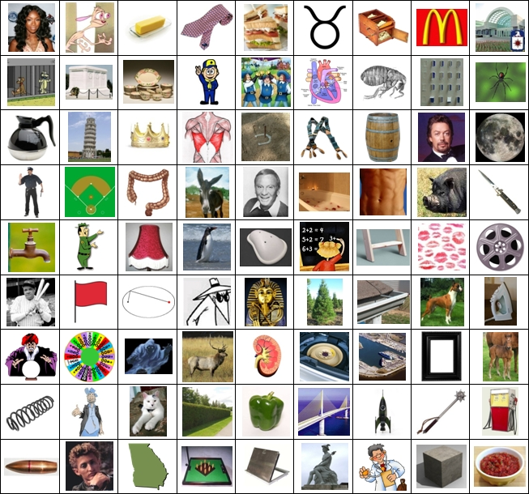

Box Sets
Excerpt from the Journal of Alexander von Humboldt:
The intricate and sometimes imperfect designs found on Aztec tile work were always a big hit, though the tiles themselves were typically laid out in rather mundane patterns.



Excerpt from the Journal of Alexander von Humboldt:
The intricate and sometimes imperfect designs found on Aztec tile work were always a big hit, though the tiles themselves were typically laid out in rather mundane patterns.
